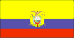

{kind=link}


![[Country map of Ecuador]](../maps/ec-map.jpg)
| Ecuador |  |
|
| | |
| Introduction |
Background: The "Republic of the Equator" was one of three countries that emerged from the collapse of Gran Colombia in 1830 (the others being Colombia and Venezuela). Between 1904 and 1942, Ecuador lost territories in a series of conflicts with its neighbors. A border war with Peru that flared in 1995 was resolved in 1999.
| Geography |
Location: Western South America, bordering the Pacific Ocean at the Equator, between Colombia and Peru
Geographic coordinates: 2 00 S, 77 30 W
Map references: South America
Area:
total:
283,560 sq km
land:
276,840 sq km
water:
6,720 sq km
note:
includes Galapagos Islands
Area - comparative: slightly smaller than Nevada
Land boundaries:
total:
2,010 km
border countries:
Colombia 590 km, Peru 1,420 km
Coastline: 2,237 km
Maritime claims:
continental shelf:
claims continental shelf between mainland and Galapagos Islands
territorial sea:
200 nm
Climate: tropical along coast, becoming cooler inland at higher elevations; tropical in Amazonian jungle lowlands
Terrain: coastal plain (costa), inter-Andean central highlands (sierra), and flat to rolling eastern jungle (oriente)
Elevation extremes:
lowest point:
Pacific Ocean 0 m
highest point:
Chimborazo 6,267 m
Natural resources: petroleum, fish, timber, hydropower
Land use:
arable land:
6%
permanent crops:
5%
permanent pastures:
18%
forests and woodland:
56%
other:
15% (1993 est.)
Irrigated land: 5,560 sq km (1993 est.)
Natural hazards: frequent earthquakes, landslides, volcanic activity; periodic droughts
Environment - current issues: deforestation; soil erosion; desertification; water pollution; pollution from oil production wastes
Environment - international agreements:
party to:
Antarctic-Environmental Protocol, Antarctic Treaty, Biodiversity, Climate Change, Desertification, Endangered Species, Hazardous Wastes, Nuclear Test Ban, Ozone Layer Protection, Ship Pollution, Tropical Timber 83, Tropical Timber 94, Wetlands, Whaling
signed, but not ratified:
Climate Change-Kyoto Protocol
Geography - note: Cotopaxi in Andes is highest active volcano in world
| People |
Population: 12,920,092 (July 2000 est.)
Age structure:
0-14 years:
36.23% (male 2,379,541; female 2,301,543)
15-64 years:
59.4% (male 3,794,515; female 3,880,367)
65 years and over:
4.37% (male 262,701; female 301,425) (2000 est.)
Population growth rate: 2.04% (2000 est.)
Birth rate: 26.51 births/1,000 population (2000 est.)
Death rate: 5.52 deaths/1,000 population (2000 est.)
Net migration rate: -0.56 migrant(s)/1,000 population (2000 est.)
Sex ratio:
at birth:
1.05 male(s)/female
under 15 years:
1.03 male(s)/female
15-64 years:
0.98 male(s)/female
65 years and over:
0.87 male(s)/female
total population:
0.99 male(s)/female (2000 est.)
Infant mortality rate: 35.13 deaths/1,000 live births (2000 est.)
Life expectancy at birth:
total population:
71.06 years
male:
68.26 years
female:
73.99 years (2000 est.)
Total fertility rate: 3.18 children born/woman (2000 est.)
Nationality:
noun:
Ecuadorian(s)
adjective:
Ecuadorian
Ethnic groups: mestizo (mixed Amerindian and Spanish) 65%, Amerindian 25%, Spanish and others 7%, black 3%
Religions: Roman Catholic 95%
Languages: Spanish (official), Amerindian languages (especially Quechua)
Literacy:
definition:
age 15 and over can read and write
total population:
90.1%
male:
92%
female:
88.2% (1995 est.)
| Government |
Country name:
conventional long form:
Republic of Ecuador
conventional short form:
Ecuador
local long form:
Republica del Ecuador
local short form:
Ecuador
Data code: EC
Government type: republic
Capital: Quito
Administrative divisions: 22 provinces (provincias, singular - provincia); Azuay, Bolivar, Canar, Carchi, Chimborazo, Cotopaxi, El Oro, Esmeraldas, Galapagos, Guayas, Imbabura, Loja, Los Rios, Manabi, Morona-Santiago, Napo, Orellana, Pastaza, Pichincha, Sucumbios, Tungurahua, Zamora-Chinchipe
Independence: 24 May 1822 (from Spain)
National holiday: Independence Day, 10 August (1809) (independence of Quito)
Constitution: 10 August 1998
Legal system: based on civil law system; has not accepted compulsory ICJ jurisdiction
Suffrage: 18 years of age; universal, compulsory for literate persons ages 18-65, optional for other eligible voters
Executive branch:
chief of state:
President Gustavo NOBOA (since 22 January 2000) following coup which deposed President MAHUAD; Vice President Pedro PINTO (since 28 January 2000); note - the president is both the chief of state and head of government
head of government:
President Gustavo NOBOA (since 22 January 2000) following coup which deposed President MAHUAD; Vice President Pedro PINTO (since 28 January 2000); note - the president is both the chief of state and head of government
cabinet:
Cabinet appointed by the president
elections:
president and vice president elected on the same ticket by popular vote for four-year term (no reelection); election last held 31 May 1998; runoff election held 12 July 1998 (next to be held NA 2002)
election results:
results of the last election prior to the coup were: Jamil MAHUAD elected president; percent of vote - 51%
note:
a military-indigenous coup toppled democratically elected President Jamil MAHAUD on 21 January 2000; the military quickly handed power over to Vice President Gustavo NOBOA on 22 January; Congress then elected a new vice president from a slate of candidates submitted by NOBOA; the new administration is scheduled to complete the remainder of MAHAUD's term, due to expire in January 2003
Legislative branch:
unicameral National Congress or Congreso Nacional (121 seats; 79 members are popularly elected at-large nationally to serve four-year terms; 42 members are popularly elected by province - two per province - for four-year terms)
elections:
last held 31 May 1998 (next to be held NA 2002)
election results:
percent of vote by party - NA; seats by party - DP 32, PSC 27, PRE 24, ID 18, P-NP 9, FRA 5, PCE 3, MPD 2, CFP 1; note - defections by members of National Congress are commonplace, resulting in frequent changes in the numbers of seats held by the various parties
Judicial branch: Supreme Court or Corte Suprema, new justices are elected by the full Supreme Court
Political parties and leaders:
Concentration of Popular Forces or CFP [Averroes BUCARAM]; Democratic Left or ID [Rodrigo BORJA Cevallos]; Ecuadorian Conservative Party or PCE [Freddy BRAVO]; Pachakutik-New Country or P-NP [Nina PACARI and Freddy EHLERS]; Popular Democracy or DP [Ramiro RIVERA]; Popular Democratic Movement or MPD [Jaime HURTADO Gonzalez]; Radical Alfarista Front or FRA [Fabian ALARCON, director]; Roldosist Party or PRE [Abdala BUCARAM Ortiz, director]; Social Christian Party or PSC [Jaime NEBOT Saadi, president]
note:
political blocs include: far left - MPD; populist - CFP and P-NP; populist left - PRE; center left - ID, DP, and FRA; center right - PSC and PCE
Political pressure groups and leaders: Confederation of Indigenous Nationalities of Ecuador or CONAIE [Antonio VARGAS]
International organization participation: CAN, ECLAC, FAO, G-11, G-77, IADB, IAEA, IBRD, ICAO, ICC, ICFTU, ICRM, IDA, IFAD, IFC, IFRCS, IHO, ILO, IMF, IMO, Intelsat, Interpol, IOC, IOM, ISO, ITU, LAES, LAIA, NAM, OAS, OPANAL, OPCW, PCA, RG, UN, UNCTAD, UNESCO, UNIDO, UPU, WCL, WFTU, WHO, WIPO, WMO, WToO, WTrO
Diplomatic representation in the US:
chief of mission:
Ambassador Ivonne A-BAKI
chancery:
2535 15th Street NW, Washington, DC 20009
telephone:
[1] (202) 234-7200
FAX:
[1] (202) 667-3482
consulate(s) general:
Chicago, Houston, Los Angeles, Miami, New Orleans, New York, Newark, Philadelphia, and San Francisco
Diplomatic representation from the US:
chief of mission:
Ambassador Gwen CLARE
embassy:
Avenida 12 de Octubre y Avenida Patria, Quito
mailing address:
APO AA 34039
telephone:
[593] (2) 562-890
FAX:
[593] (2) 502-052
consulate(s) general:
Guayaquil
Flag description: three horizontal bands of yellow (top, double width), blue, and red with the coat of arms superimposed at the center of the flag; similar to the flag of Colombia which is shorter and does not bear a coat of arms
| Economy |
Economy - overview: Ecuador has substantial oil resources and rich agricultural areas. Because the country exports primary products such as oil, bananas, and shrimp, fluctuations in world market prices can have a substantial domestic impact. Ecuador joined the World Trade Organization in 1996, but has failed to comply with many of its accession commitments. In recent years, growth has been uneven due to ill-conceived fiscal stabilization measures. The aftermath of El Nino and depressed oil market of 1997-98 drove Ecuador's economy into a free-fall in 1999. The beginning of 1999 saw the banking sector collapse, which helped precipitate an unprecedented default on external loans later that year. Continued economic instability drove a 70% depreciation of the currency throughout 1999, which eventually forced a desperate government to dollarize the currency regime in 2000. The move stabilized the currency, but did not stave off the ouster of the government. The new president, Gustavo NOBOA has yet to complete negotiations for a long sought IMF accord. He will find it difficult to push through the reforms necessary to make dollarization work in the long-run.
GDP: purchasing power parity - $54.5 billion (1999 est.)
GDP - real growth rate: -8% (1999 est.)
GDP - per capita: purchasing power parity - $4,300 (1999 est.)
GDP - composition by sector:
agriculture:
14%
industry:
36%
services:
50% (1999 est.)
Population below poverty line: 50% (1999 est.)
Household income or consumption by percentage share:
lowest 10%:
2.3%
highest 10%:
37.6% (1994)
Inflation rate (consumer prices): 59.9% (1999 est.)
Labor force: 4.2 million
Labor force - by occupation: agriculture 30%, industry 25%, services 45% (1999 est.)
Unemployment rate: 12% with widespread underemployment (November 1998 est.)
Budget:
revenues:
planned $5.1 billion (not including revenue from potential privatizations)
expenditures:
$5.1 billion including capital expenditures of $NA (1999)
Industries: petroleum, food processing, textiles, metal work, paper products, wood products, chemicals, plastics, fishing, lumber
Industrial production growth rate: 2.4% (1997 est.)
Electricity - production: 9.657 billion kWh (1998)
Electricity - production by source:
fossil fuel:
27.96%
hydro:
72.04%
nuclear:
0%
other:
0% (1998)
Electricity - consumption: 8.981 billion kWh (1998)
Electricity - exports: 0 kWh (1998)
Electricity - imports: 0 kWh (1998)
Agriculture - products: bananas, coffee, cocoa, rice, potatoes, manioc (tapioca), plantains, sugarcane; cattle, sheep, pigs, beef, pork, dairy products; balsa wood; fish, shrimp
Exports: $4.1 billion (f.o.b., 1999)
Exports - commodities: petroleum, bananas, shrimp, coffee, cocoa, cut flowers, fish
Exports - partners: US 39%, Colombia 7%, Italy 6%, Peru 5%, Chile 3% (1998)
Imports: $2.8 billion (c.i.f., 1999)
Imports - commodities: machinery and equipment, raw materials, fuels; consumer goods
Imports - partners: US 39%, Colombia 11%, Japan 9%, Venezuela 5%, Mexico 3% (1998)
Debt - external: $15.3 billion (1999)
Economic aid - recipient: $695.7 million (1995)
Currency: 1 sucre (S/) = 100 centavos
Exchange rates: sucres (S/) per US$1 - 24,860.7 (January 2000), 11,786.8 (1999), 5,446.6 (1998), 3,988.3 (1997), 3,189.5 (1996), 2,564.5 (1995)
Fiscal year: calendar year
| Communications |
Telephones - main lines in use: 748,000 (1995)
Telephones - mobile cellular: 49,776 (1995)
Telephone system:
domestic:
facilities generally inadequate and unreliable
international:
satellite earth station - 1 Intelsat (Atlantic Ocean)
Radio broadcast stations: AM 392, FM 27, shortwave 29 (1998)
Radios: 4.15 million (1997)
Television broadcast stations: 15 (including one station on the Galapagos Islands) (1997)
Televisions: 1.55 million (1997)
Internet Service Providers (ISPs): 8 (1999)
| Transportation |
Railways:
total:
812 km (single track)
narrow gauge:
812 km 1.067-m gauge
Highways:
total:
43,197 km
paved:
8,165 km
unpaved:
35,032 km (1999 est.)
Waterways: 1,500 km
Pipelines: crude oil 800 km; petroleum products 1,358 km
Ports and harbors: Esmeraldas, Guayaquil, La Libertad, Manta, Puerto Bolivar, San Lorenzo
Merchant marine:
total:
29 ships (1,000 GRT or over) totaling 233,151 GRT/388,750 DWT
ships by type:
chemical tanker 2, liquified gas 1, passenger 4, petroleum tanker 22 (1999 est.)
Airports: 182 (1999 est.)
Airports - with paved runways:
total:
57
over 3,047 m:
2
2,438 to 3,047 m:
5
1,524 to 2,437 m:
17
914 to 1,523 m:
13
under 914 m:
20 (1999 est.)
Airports - with unpaved runways:
total:
125
914 to 1,523 m:
36
under 914 m:
89 (1999 est.)
Heliports: 1 (1999 est.)
| Military |
Military branches: Army (Ejercito Ecuatoriano), Navy (Armada Ecuatoriana, includes Marines), Air Force (Fuerza Aerea Ecuatoriana), National Police (Policia Nacional)
Military manpower - military age: 20 years of age
Military manpower - availability:
males age 15-49:
3,296,678 (2000 est.)
Military manpower - fit for military service:
males age 15-49:
2,224,033 (2000 est.)
Military manpower - reaching military age annually:
males:
130,869 (2000 est.)
Military expenditures - dollar figure: $720 million (FY98)
Military expenditures - percent of GDP: 3.4% (FY98)
| Transnational Issues |
Disputes - international: demarcation of the agreed-upon border with Peru was completed in May 1999
Illicit drugs: significant transit country for cocaine and derivatives of coca originating in Colombia and Peru; importer of precursor chemicals used in production of illicit narcotics; important money-laundering hub; increased activity on frontiers by trafficking groups and Colombian insurgents